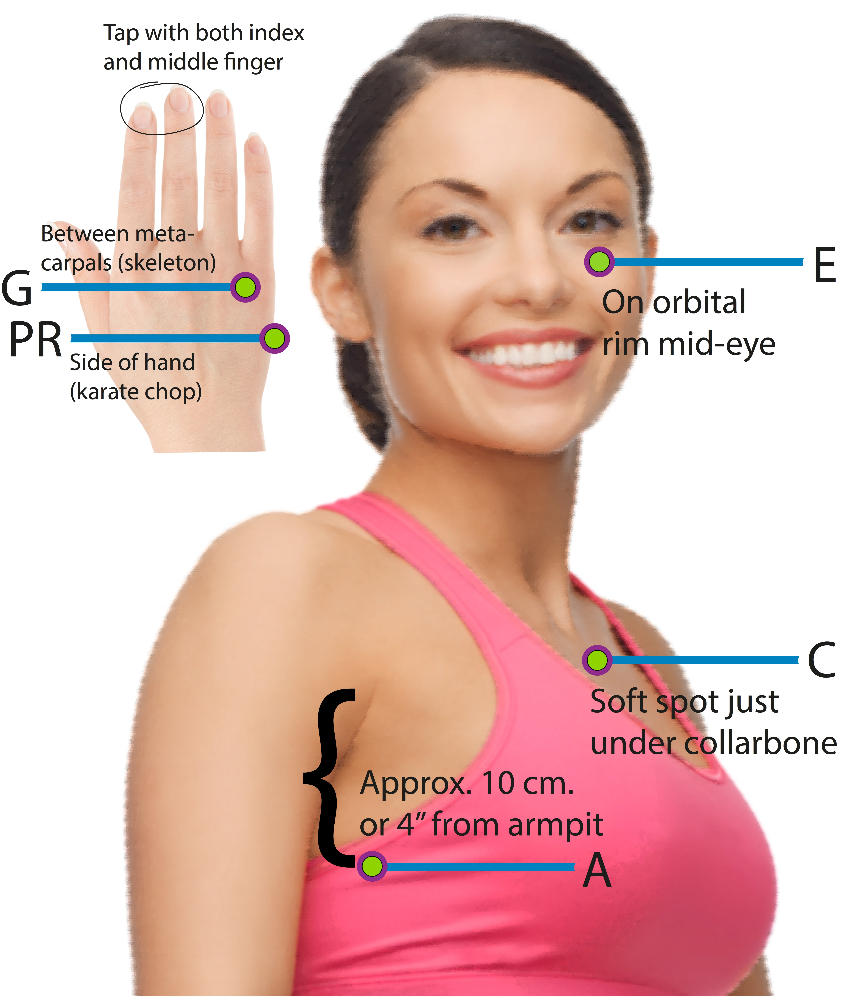

3.3 STOP your FEAR
Change will only happen when you let go of the fear of failure, the fear of being laughed at, the fear of falling, the fear of trying - etc.
When you program your mind and brain to think strong, supportive, life-affirming thoughts, fear automatically takes a back seat.
According to Robert Kiyosaki, author of the bestselling book Rich Dad, Poor Dad, fear is an acronym for:
F = False
E = Evidence
A = Appearing
R = Real
Neale Donald Walsch has also been quoted for this acronym.
Every journey begins with one step, whether it’s climbing a mountain or preventing heart disease.
Heart disease is a major problem. Every year, about 715,000 Americans have a heart attack. About 600,000 people die from heart disease in the United States each year—that’s 1 out of every 4 deaths. Heart disease is the leading cause of death for both men and women.
Read more about the
no. 1 killer (requires internet connection)
And here are the other
top killers (requires internet connection)
So, via the Metamedicin theory there is a probability that anxiety, worrying etc. influences the long term health of your heart. It's too easy to say STOP worrying, although some people train this ability via Mindfulness or other techniques.
The technique below, was developed through Thought Field Therapy - and is a general algorithm - with a success rate of up to 80%, meaning that approx. 20% or more people worldwide may experience little or no benefit from this technique.
For a higher success rate - specifically on yourself - consult with a certified Thought Field Therapist in your area that also practices Applied Kinesiology, to individually design your own unique algorithm using the TFT Diagnostics Method.
It is also known, that using TFT proactively, meaning with a preventive purpose, has little or no effect. TFT is effective when a person is tuned into the Thought Field and thinking about the problem.
You can use the following treatment for all kinds of anxiety, nervousness, panic attacks and common phobias. Fear of flying, fear of heights, fear of mice, the dark, dogs, horses, etc., hydrophobia and fear of driving over bridges, to name just a few examples. Some phobias, however, can be difficult to treat, for example claustrophobia, birds and spiders usually require a different treatment.
To use this self-help tool without knowing the principles of TFT and the many factors which could come into play, may obviously limit the degree of success. This treatment does NOT replace in person (live) therapeutic help or training.
****** TECHNIQUE ******

Step 1
Think of your anxiety, your panic or your fear. Note the degree of discomfort and assess how you feel about the situation on a scale of 1 to 10, with 1 being no pain and 10 is equivalent to the worst discomfort. Write down the number.
Step 2
While you're thinking about your problem and feel the unwanted feeling, you tap with two fingers together (usually index finger and middle finger). It does not matter which hand or which side of the body you tap:
Tap PR (Psychological Reversal)
This point is also called "karate chop point" on the side of hand.
Tap 5-10 times.
Tap E (Eye)
Then tap under the eye at the edge of the cheekbone 5-10 times.
Tap A (Arm)
Tap under arm approx. one hand width (2.5 cm or 4") from the armpit 5-10 times.
Tap C (Collarbone)
Tap below collarbone approx. 2.5 cm from the center of your body 5-10 times.
9 Gamut series - Tap G
Nine Gamut series. Keep your head still and look straight ahead. Tap Gamut point on the top side of the hand in the hollow bit between the little finger and ring finger, keep tapping 5-10 times for each of the following exercises:
1 Look straight ahead
2 Close your eyes
3 Keep your head still, open eyes and look down to the right
4 Keep your head still and look down to the left
5 Roll your eyes around in a big circle in one direction
6 Roll your eyes around in the opposite direction
7 Hum arbitrary notes with your mouth closed
8 Count out loud from 1 to 5
9 Hum arbitrary notes again (different from no. 7)
Tap E (Eye) again
Then tap under the eye at the edge of the cheekbone 5-10 times.
Tap A (Arm) again
Tap under arm approx. one hand width (2.5 cm or 4") from the armpit 5-10 times.
Tap C (Collarbone) again
Tap below collarbone approx. 2.5 cm from the center of your body 5-10 times.
Step 3
Think about your problem again. Feel and assess the degree of discomfort on a scale from 1 to 10.
If the discomfort is two or less, you can go to Step 4.
If the discomfort is unchanged or decreased by at least 2 points on the 10 point scale repeat Steps 2 and 3.
Discontinue treatment if discomfort has not decreased after repeated treatments. In this case, seek additional help.
ER (Eye Roll)
Follow with floor-to-ceiling eye roll. Keep your head still and tap the gamut point on the top side of the hand in the hollow between the little finger and ring finger (see picture). Keep tapping and let your eyes follow a line from the floor up to the ceiling.
Floor-to-ceiling eye roll usually takes approx. 6-8 seconds.
End of technique
Relax !【ツ】
DISCLAIMER:
The content of this app is for information and self-help purposes only. Any information presented does NOT substitute professional medical or therapeutic diagnosis or treatment - including under serious life threatening conditions. Please always take responsibility for your health and if necessary consult with your doctor, health practitioner or therapist in case of any diagnostics or treatment concerning physical or mental health.
Thought Field Therapy is optimally applied when consulting with your doctor, health practitioner or therapist - and when there is no precedent ie. epilepsy or other illness in your medical history that is relevant to take into consideration.
Change to
section 4.1 -
Links